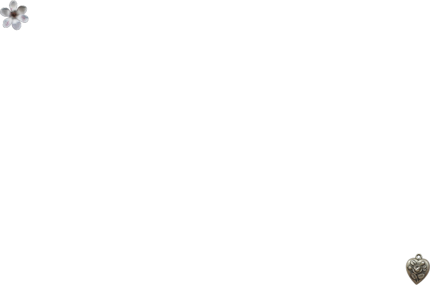

.


 resources:
resources:

♪ w3schools all coding purposes.
♪ remove.bg for removing backgrounds and creating pngs.
♪ color picker to select precise colours from images and also create colour palettes.
♪ emoji symbols for cute symbols and text art.
♪ tumblr for gifs and pngs.
♪ pinterest for imagery but also one of my main sources for inspiration.
♪ screenfly allows you to see exactly how your site looks on different devices and screen sizes. very important!
♪ remove.bg for removing backgrounds and creating pngs.
♪ color picker to select precise colours from images and also create colour palettes.
♪ emoji symbols for cute symbols and text art.
♪ tumblr for gifs and pngs.
♪ pinterest for imagery but also one of my main sources for inspiration.
♪ screenfly allows you to see exactly how your site looks on different devices and screen sizes. very important!
please read:
my work is heavily inspired by old javascript flash websites and games. similarly, i love to create
visually appealing and interactive websites. i use html, css and javascript of my own knowledge, which is always expanding, to create
my websites!
any imagery, fonts, music, etc are under fair use copyright law unless i state otherwise (meaning it is created only by me),
i only sell and profit off of work made solely by myself. should you see, as in the owner, any artwork, music, etc
that you would like removed, please contact me and it will be taken down. my own work is able to be used as a profile picture, or even a post on
other sites as long as visible credit is given. this is because i would like exposure as much as possible. crediting
me helps to highlight the effort gone into my work. i tend to use christian imagery and biblical references within my work. this is not to force any beliefs
on others but simply because christianity is a part of my own identity. i do not belong to any particular political ideology nor do i try to enforce them.
all religious/non-religious identities are welcome and celebrated on my website. regarding privacy, this website of mine uses/requires zero cookies whatsoever. i make zero
commission from the website itself simply existing, thus ensuring all of your privacy is secure and not sold to third-party services.